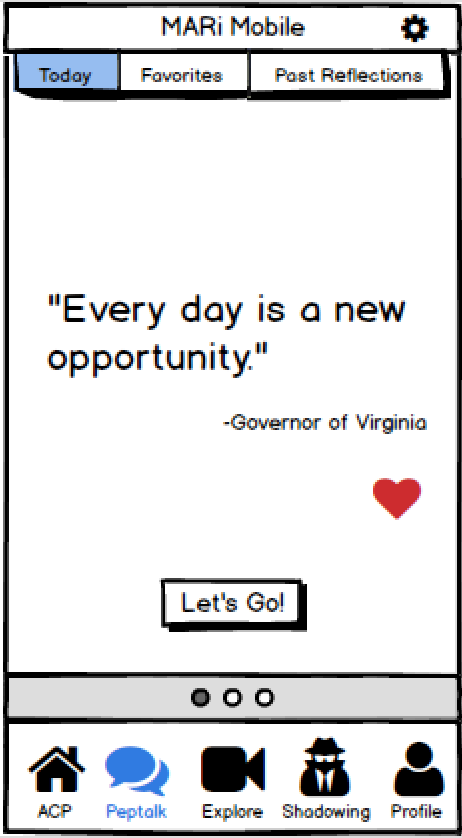
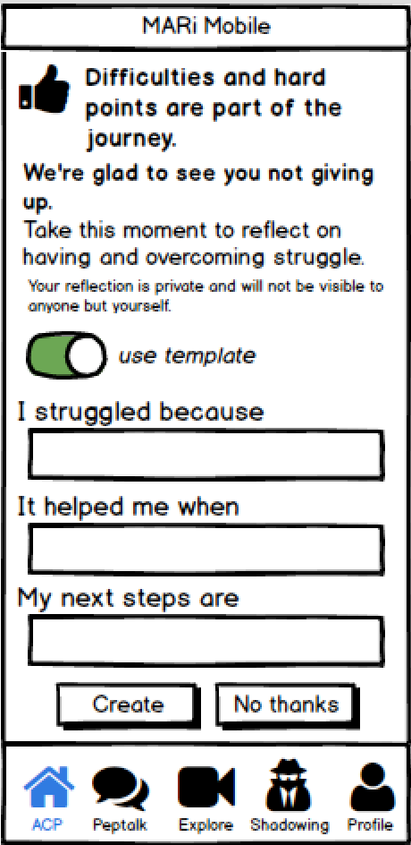
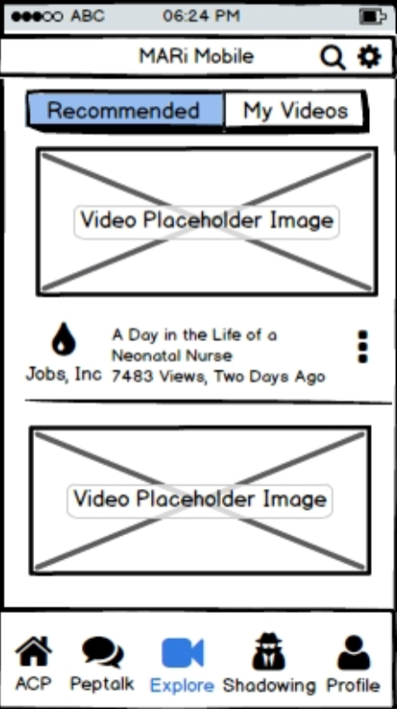
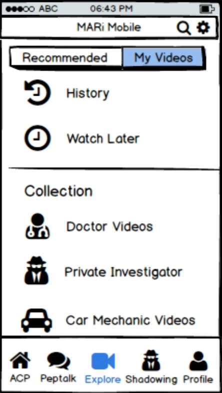
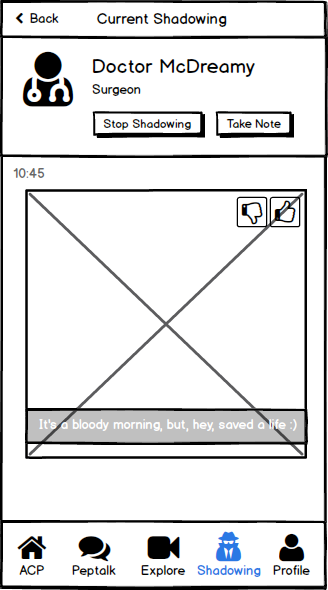
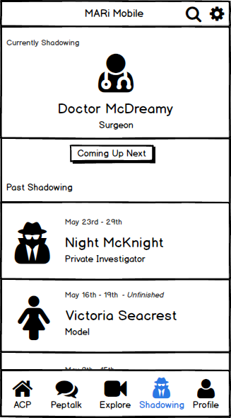
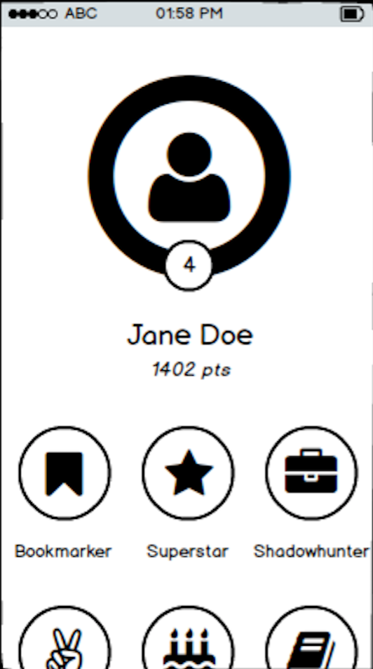

Development
Iterative Design & User Testing | Summer 2016
Product Overview
Through discussion with MARi, we narrowed down our nine findings to two prominent ones, which are awareness and motivation. These two aspects are the primary focus of our product, but we tried to create a product which can encompass other findings as well, such as reflection, personalization, and scaffolding.
Instead of creating a standalone product, we developed features to integrate with MARi's existing application. Our two main products are Peptalk and Job View. Peptalk prompts students to write reflections at multiple points in their process of setting and working on goals and delivers peptalks written by others to encourage them in their work. Job View provide a non-traditional, social media-like way to see the wide variety of activities that students may encounter in a certain profession.
Our Process
Our design and development process followed agile methodology to encourage frequent iteration and user feedback. The summer was divided into 4 phases of 2 weeks each, with each week considered as a sprint. We corresponded with MARi after every sprint to ensure we were on the same path and to verify our next steps, based on both user testing and client requests.
During the first sprint, there was much time spent in synthesizing information from the visioning session from our spring presentation and modeling the resulting themes through user flows as some features having several options to choose from. Through discussions with MARi, the user flows were narrowed down. The remaining 3 sprints took the designs from low to mid to high fidelity and were presented as a continuous iterative design process. Finally, we present our recommendations for how to move forward with our features.
Brainstorming
In discussions with MARi, we identified two areas to pursue in our feature design: motivation, ‘an asynchronous mean to allow students to get messages to lift them up when they aren’t feeling like they can do it’, and awareness, ‘allowing someone to get a glimpse into the breadth of things done in an occupation, and helping them understand if this is a direction that they want to go to’. Working from these and drawing on the results of our visioning sessions, we brainstormed lists of subfeature ideas and questions we could ask, then brought them together to begin the process of turning diverse ideas into full coherent features.
In order to come up with various different initial ideas, we separately created user flows for each of the two areas. With 11 total user flows, we reconvened to share our ideas. Going through them, we identified the aspects we wanted to retain and use. From these resultant subfeatures, we then reassembled four final user flows: three disparate user flows for awareness and one base level user flow with several juncture points of multiple options for motivation.
In addition to our work on awareness and motivation and the features that came out of that, we also addressed MARi's needs of a gamification element in their application. Gamification seeks to promote student motivation by awarding points, level advancements, and badges for work and progress in the app. As a part of this, we designed and created student profile screens where students can see their point, levels, progress, standing, and badges, as well as badges they are able to earn. Created from MARi’s existent plan, our work on gamification did not go through the steps of brainstorming and user flows, but began in low fidelity and proceeded through subsequent iterations from that point.
Iterations
We tested an average of 5 high schoolers per week from the low fidelity to high fidelity phase, which totaled 6 iterations and 23 users. While we presented the MARi Mobile app as a whole to provide context for the users, our user testing was mainly focused on the features that we developed: Shadowing, Peptalk, and the gamification dashboard.
Low Fidelity
To quickly come up with a usable prototype for our users to test, we used Balsamiq, a rapid prototyping tool, to create our initial, low-fidelity screens. These screens are then exported into PDF files with clickable hotspots, so users can have the illusion of actually using the application. With image placeholders, simple text, and sketched components we focused on the structure, navigation, and layout of our features. Our main goal is to answer these questions: how would our ideas turn into something users could see and interact with? how would users utilize and progress through our features?
Peptalk
 Explore
 Shadowing
 Gamification
Medium Fidelity
Once we had repeatedly tested our low fidelity prototypes with users and felt we had a stable basic structure and layout, we took the step up to medium fidelity. We used Sketch, a vector-based design application for Mac, and the prototyping tool Flinto, we created full color, designed screens meant to give the full visual experience of the planned for application. In collaboration with the MARi team, we matched our design language to the overarching MARi application and connected our screens into theirs, creating an integrated experience for the users that could best reflect and simulate using the application in reality.